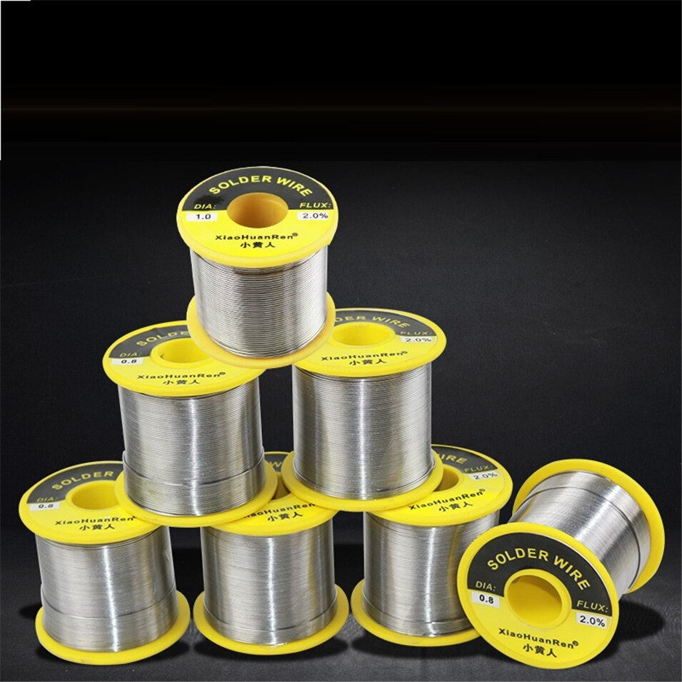

El cobre es un mineral el cual extraemos en grandes cantidades desde minas a cielo abierto desde el oeste de Andalucía. Es un mineral de bastante uso en el ámbito de la electrónica, principalmente en cables de todos los tamaños. El mineral en bruto que extraemos se lleva a nuestras instalaciones mineras para su lavado y purificación, para así obtener una mayor calidad del producto bruto. Una vez el proceso se ha completado, los minerales serán distribuidos acorde a la demanda entre su venta y su procesado. Los minerales solíamos venderlos a las refinerías del país, pero actualmente estamos construyendo nuestras propias refinerías.
Actualmente utilizamos el mineral extraido para:
- Venta a otras entidades mineras
- Fundición y procesado del metal
- Venta a entidades geológicas y científicas
La venta de cobre se debe principalmente en la forma de finos filamentos para uso de cables y soldadura. Es por esta demanda que hemos terminado de adaptar una de nuestras grandes refinerías a la creación de estas aleaciones y esta será nuestra próxima aleación que saldrá al mercado: "Filamento de cobre plateado". Pudiendo ser usado tanto en soldaduras como cables, pero que gracias a nuestras tecnologías mantiene el color del estaño para reducir los gastos de pintura a la hora de ocultarlo de la vista o para su mayor fácilidad de detectar en entornos oscuros.
